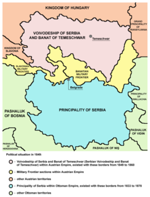
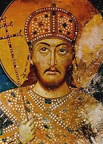

Historia de Serbia
En la antigüedad, el territorio de Serbia formó parte del Imperio Romano y, más tarde, del Imperio Bizantino. Uno de los hitos importantes fue la construcción de la ciudad de Sirmium (hoy Sremska Mitrovica), que fue una de las capitales del Imperio Romano.
Durante la Edad Media, Serbia alcanzó su apogeo bajo el gobierno de la dinastía Nemanjic (siglos XII al XIV). Esta época fue conocida por la consolidación de un reino fuerte y la construcción de importantes monasterios ortodoxos como el de Studenica y el de Visoki Decani, reconocidos hoy como Patrimonio de la Humanidad.
